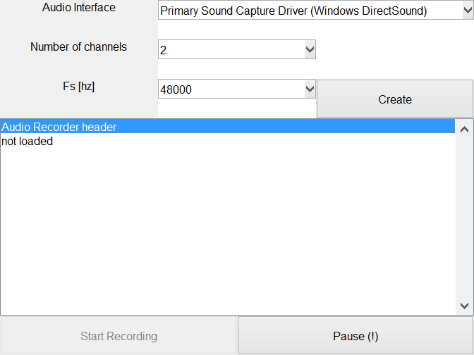

Contents
classdef comp_mic_ui < handle
Computer audio Interface Class
This class will interface with the Computer audio interfaces
Constants
properties (Constant)
Name = 'Computer Microphone';
end
Properties
properties
Parent
MainObj
Info = audiodevinfo;
FsOptions = {'8000','11025','22050','44100','48000','88200','96000','192000'};
Fs = 48000;
ChanNames = {'Left PC Mic','Right PC Mic'};
NChan = 2;
ID
BitsPS = 16;
UI
RecObj
TimerPeriod = 0.5;
end
Methods
methods
Scarlett Constuctor
function obj = comp_mic_ui(parent, mainObj)
if nargin == 0
obj.Parent = figure('Name',obj.Name,'NumberTitle','off','resize','on');
elseif nargin >= 1
if ishandle(parent)
obj.Parent = parent;
else
warning(['First argument needs to be a handle,'...
'new figure created.']);
obj.Parent = figure('Name',obj.Name,'NumberTitle','off','resize','on');
end
end
if nargin >= 2
obj.MainObj = mainObj;
else
obj.MainObj.DataBuffer = bf_data;
end
BF_DATA Beamformer Audio Buffer. Has many functions to label the
channels and add data from different sources. The time indices of the
data in the buffer can be kept in sync using different methods.
BF_DATA(OBJ) create empty file object
BF_DATA(OBJ, MAINOBJ) create file object and add handle to main object
BF_DATA(OBJ, MAINOBJ, SOURCEID) create empty file object and set SourceID
BF_DATA(OBJ, MAINOBJ, SOURCEID, FILENAME) add file named fileName to object
BF_DATA(OBJ, MAINOBJ, SOURCEID, FILENAME, LOCATIONS) add file with locations
BF_DATA(OBJ, MAINOBJ, SOURCEID, FILENAME, LOCATIONS, CHANNAMES) add file with
locations and channel names
Example 1:
obj = bf_data
obj.setChanNames({'S1','S2','S3','S4'})
obj.setTotalSamples(100)
obj.addSamples([1;2;3;4;[5:100]'],'S3')
obj.getAudioData({'S3','S1'})
Example 2:
obj = bf_data
obj.setChanNames({'S1','S2','S3','S4'})
obj.addSamples([1;2;3;4;[5:100]'],'S1',1,25)
Example 3:
obj = bf_data
obj.setChanNames({'S1','S2','S3','S4'})
obj.setDelays(5,{'S2'})
obj.addSamples([1;2;3;4;[5:100]'],'S3',1)
BF_DATA Methods:
load - Load data from audio or matlab file.
save - Save data to audio or matlab file.
play - Play the data using an audio device.
setNChan - Set number of channels.
setTotalSamples - Set total number of samples.
setLocations - Set Channel Locations.
setChanNames - Set Channel Names.
setDelays - Set Delay Times.
addSamples - Add samples to the data.
getAudioData - Get samples out of buffer (time axes of channels agree).
resampleData - Resample data using matlab resample function
delayData - Delay data so when data is loaded the time axes agree.
names2inds - Get index of channel(s) in audiodata matrix
BF_DATA Properties:
FileName - Name of the audio file to save including extention
FilePath - Path of the audio file to save
SourceID - Identifier for source device or file in use.
Fs - Sampling Frequency in Hz
BitsPerSample - Number of Bits per audio Sample
NChan - Number of audio channels in File
Comment - Comment of audio file
Locations - Channel locations [x y z az el up]
ChanNames - Channel names
DelaySamples - Delays in samples for each channel
CurrentSample - Current sample for each channel. Used when adding
samples to the channel.
TotalSamples - Total length of the audio data in samples
IsInitialized - Has the source been correctly initialized
AudioData - Audio Data matrix size = [TotalSamples NChan]
Tag - Tag to find object
Written for the BSc graduation project Acoustic Enhancement via
Beamforming Using Smartphones.
Team: S. Bosma R. Brinkman
T. de Rooij R. Smeding
N. van Wijngaarden E. Wouters
Supervisor: Jorge Martínez Castañeda
Contact: E.H.Wouters@student.tudelft.nl
See also BF_DATA/LOAD, BF_DATA/SAVE, BF_DATA/PLAY, BF_DATA/ADDSAMPLES,
BF_DATA/SETNCHAN, BF_DATA/SETTOTALSAMPLES, BF_DATA/SETLOCATIONS,
BF_DATA/SETCHANNAMES, BF_DATA/SETDELAYS, BF_DATA/ADDSAMPLES,
BF_DATA/GETAUDIODATA, BF_DATA/RESAMPLEDATA, BF_DATA/DELAYDATA,
BF_DATA/NAMES2INDS, MITM, SITM, AUDIOREAD, AUDIOWRITE, SAVE, LOAD
Published output in the Help browser
showdemo bf_data
Graphics Code
n=9;m=3;
obj.UI.TextInterface = uicontrol(obj.Parent,'Style','text',...
'String','Audio Interface','Units','Normalized',...
'Position',grid2pos([1,1, 1,1, m,n]));
obj.UI.PopupInterface = uicontrol(obj.Parent,'Style','popup',...
'String',{obj.Info.input.Name},'Units','Normalized',...
'Position',grid2pos([2,1, 2,1, m,n]),'Tag','I',...
'Callback',@obj.recChanged_Callback);
obj.UI.TextNumChan = uicontrol(obj.Parent,'Style','text',...
'String','Number of channels','Units','Normalized',...
'Position',grid2pos([1,2, 1,1, m,n]));
obj.UI.PopupNumChan = uicontrol(obj.Parent,'Style','popup',...
'String',{'1','2'},'Units','Normalized','Tag','N',...
'Position',grid2pos([2,2, 1,1, m,n]),...
'Callback',@obj.recChanged_Callback);
obj.UI.TextFs = uicontrol(obj.Parent,'Style','text',...
'String','Fs [hz]','Units','Normalized',...
'Position',grid2pos([1,3, 1,1, m,n]));
obj.UI.PopupFs = uicontrol(obj.Parent,'Style','popup',...
'String',obj.FsOptions,'Units','Normalized',...
'Position',grid2pos([2,3, 1,1, m,n]),'Tag','Fs',...
'Callback',@obj.recChanged_Callback);
obj.UI.PbCreate = uicontrol(obj.Parent,'Style','pushbutton',...
'String','Create','Units','Normalized',...
'Position',grid2pos([3,3, 1,1, m,n]),'Callback',@obj.pbCreate_Callback);
obj.UI.TextRecHeader = uicontrol(obj.Parent,'Style','listbox',...
'Units','Normalized','Position',grid2pos([1,4, 3,n-4, m,n]),...
'String',{'Audio Recorder header','not loaded'});
obj.UI.PbStart = uicontrol(obj.Parent,'Style','pushbutton',...
'String','Start Recording','Units','Normalized','Enable','off',...
'Position',grid2pos([1,n, 1,1, 2,n]),'Callback',@obj.pbStart_Callback);
obj.UI.PbPause = uicontrol(obj.Parent,'Style','pushbutton',...
'String','Pause (!)','Units','Normalized','Enable','on',...
'Position',grid2pos([2,n, 1,1, 2,n]),'Callback',@obj.pbPause_Callback);
obj.UI.PopupNumChan.Value = 2;
obj.UI.PopupFs.Value = 5;

end
ans =
comp_mic_ui with properties:
Name: 'Computer Microphone'
Parent: [1x1 Figure]
MainObj: [1x1 struct]
Info: [1x1 struct]
FsOptions: {1x8 cell}
Fs: 48000
ChanNames: {'Left PC Mic' 'Right PC Mic'}
NChan: 2
ID: []
BitsPS: 16
UI: [1x1 struct]
RecObj: []
TimerPeriod: 0.5000
Popup Changed function
function recChanged_Callback(obj,~,~)
obj.Fs = str2double(obj.FsOptions{obj.UI.PopupFs.Value});
obj.Info = audiodevinfo;
obj.ID = obj.Info.input(obj.UI.PopupInterface.Value).ID;
obj.NChan = obj.UI.PopupNumChan.Value;
obj.UI.PbCreate.String = 'Update';
end
Create function
function pbCreate_Callback(obj,~,~)
if strcmp(obj.UI.PbCreate.String,'Update')
obj.UI.PbStart.String = 'Start Recording';
obj.UI.PbStart.Enable = 'off';
obj.UI.pbPause.String = 'Pause';
obj.UI.pbPause.Enable = 'off';
obj.RecObj = [];
obj.NChan = 0;
end
if isempty(obj.RecObj)
obj.Fs = str2double(obj.FsOptions{obj.UI.PopupFs.Value});
obj.Info = audiodevinfo;
obj.ID = obj.Info.input(obj.UI.PopupInterface.Value).ID;
obj.NChan = obj.UI.PopupNumChan.Value;
obj.RecObj = audiorecorder(obj.Fs, obj.BitsPS, obj.NChan,obj.ID);
obj.RecObj.TimerFcn = @obj.timerFcn;
obj.RecObj.TimerPeriod = obj.TimerPeriod;
obj.MainObj.DataBuffer.setChanNames(obj.ChanNames(1:obj.NChan));
obj.UI.PbStart.Enable = 'on';
obj.UI.PbCreate.String = 'Delete';
header = {'Audio Recorder header',...
sprintf('SampleRate: %i',obj.RecObj.SampleRate),...
sprintf('BitsPerSample: %i',obj.RecObj.BitsPerSample),...
sprintf('NumberOfChannels: %i',obj.RecObj.NumberOfChannels),...
sprintf('DeviceID: %i',obj.RecObj.DeviceID),...
sprintf('CurrentSample: %i',obj.RecObj.CurrentSample),...
sprintf('TotalSamples: %i',obj.RecObj.TotalSamples),...
['Running: ',obj.RecObj.Running],...
sprintf('TimerPeriod: %d',obj.RecObj.TimerPeriod)};
else
obj.UI.PbCreate.String = 'Create';
header = {'Audio Recorder header','not loaded'};
obj.UI.PbStart.String = 'Start Recording';
obj.UI.PbStart.Enable = 'off';
obj.UI.pbPause.String = 'Pause';
obj.UI.pbPause.Enable = 'off';
obj.RecObj = [];
obj.NChan = 0;
end
obj.UI.TextRecHeader.String = header;
end
Pushbutton Start Recording function
function pbStart_Callback(obj,~,cbd)
if strcmp(cbd.Source.String, 'Start Recording')
cbd.Source.String = 'Stop Recording';
obj.UI.pbPause.String = 'Pause';
obj.UI.pbPause.Enable = 'on';
record(obj.RecObj);
else
stop(obj.RecObj);
cbd.Source.String = 'Start Recording';
header = {'Audio Recorder header',...
sprintf('SampleRate: %i',obj.RecObj.SampleRate),...
sprintf('BitsPerSample: %i',obj.RecObj.BitsPerSample),...
sprintf('NumberOfChannels: %i',obj.RecObj.NumberOfChannels),...
sprintf('DeviceID: %i',obj.RecObj.DeviceID),...
sprintf('CurrentSample: %i',obj.RecObj.CurrentSample),...
sprintf('TotalSamples: %i',obj.RecObj.TotalSamples),...
['Running: ',obj.RecObj.Running],...
sprintf('TimerPeriod: %d',obj.RecObj.TimerPeriod)};
obj.UI.TextRecHeader.String = header;
obj.UI.pbPause.String = 'Pause';
obj.UI.pbPause.Enable = 'off';
end
end
Pushbutton Start Recording function
function pbPause_Callback(obj,~,cbd)
if strcmp(cbd.Source.String, 'Pause')
cbd.Source.String = 'Resume';
pause(obj.RecObj);
header = {'Audio Recorder header',...
sprintf('SampleRate: %i',obj.RecObj.SampleRate),...
sprintf('BitsPerSample: %i',obj.RecObj.BitsPerSample),...
sprintf('NumberOfChannels: %i',obj.RecObj.NumberOfChannels),...
sprintf('DeviceID: %i',obj.RecObj.DeviceID),...
sprintf('CurrentSample: %i',obj.RecObj.CurrentSample),...
sprintf('TotalSamples: %i',obj.RecObj.TotalSamples),...
['Running: ',obj.RecObj.Running],...
sprintf('TimerPeriod: %d',obj.RecObj.TimerPeriod)};
obj.UI.TextRecHeader.String = header;
else
cbd.Source.String = 'Pause';
resume(obj.RecObj);
end
end
function timerFcn(obj,~,~)
obj.MainObj.DataBuffer.addSamples(obj.RecObj.getaudiodata(obj.MainObj.DataBuffer.audioDataType),obj.ChanNames(1:obj.NChan),1,1);
Continuous recording with dsp player
hafr = dsp.AudioFileReader(my_file_name);
hap = dsp.AudioPlayer('SampleRate',48000);
while ~isDone(hafr)
audio = step(hafr);
step(hap,audio);
end
pause(hap.QueueDuration); % Wait until audio plays to the end
release(hafr); % close input file, release resources
release(hap); % close audio output device, release resources end
end
end